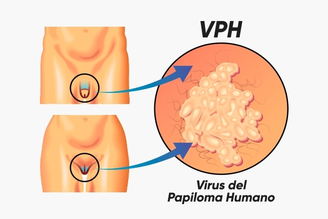

 El herpes genital es una infección contagiosa causada por el virus del herpes simple (HVS por sus siglas en inglés). Hay dos cepas o tipos diferentes de HVS: el virus del herpes simple tipo 1 (HVS-1) y tipo 2 (HVS-2). Ambos pueden causar herpes genitales, aunque la mayoría de los casos de herpes genitales se deben al HVS-2.5 Cuando es sintomático, el HVS-1 suele presentarse como ampollas o boqueras en los labios (herpes labial o febril), pero también puede infectar la región genital a través del contacto oral-genital o genital-genital. El HVS-2 sintomático suele causar ampollas dolorosas y acuosas en o alrededor de los genitales o el ano. Sin embargo, gran cantidad de las personas que tienen estos virus no presentan signos o síntomas, o los mismos mínimos. Ni el HVS-1 ni el HVS-2 pueden curarse, e incluso durante los períodos en que la persona infectada no presenta síntomas, el virus puede encontrarse en las células nerviosas del cuerpo. Periódicamente, algunas personas experimentan brotes en los que aparecen nuevas ampollas en la piel del área genital; en esos momentos, hay más probabilidad de que el virus se transmita a otras personas. Las mujeres embarazadas, especialmente las que adquieren el herpes genital por primera vez durante el embarazo, pueden transmitir la infección al recién nacido, lo que podría causar el HVS neonatal, una infección potencialmente mortal que afecta la piel, el cerebro y otros órganos del bebé.
| HEPATITIS VIRAL |
|||||||
|---|---|---|---|---|---|---|---|
| Hepatitis A | La afección suele desaparecer sin necesidad de tratamiento al cabo de uno o dos meses. El reposo y la hidratación adecuada pueden ayudar. |
Sintomas |
|||||
Los síntomas incluyen fatiga, náuseas, dolor abdominal, pérdida del apetito y febrícula. |
|||||||
| Hepatitis B | La afección suele desaparecer por sí sola. Los casos crónicos requieren medicación y, posiblemente, un trasplante de hígado. |
Sintomas |
|||||
Los síntomas varían y pueden incluir color amarillento de los ojos, dolor abdominal y orina oscura. Algunas personas, especialmente los niños, no experimentan síntomas. Los casos crónicos pueden incluir insuficiencia hepática, cáncer o cicatrices. |
|||||||
| Hepatitis c | La hepatitis C se trata con medicamentos antivirales. En algunas personas, los fármacos más recientes pueden erradicar el virus. |
Sintomas |
|||||
Aparición de hemorragias con facilidad, Propensión a hematomas, Fatiga, Falta de apetito, Coloración amarillenta de la piel y los ojos (ictericia),Orina de color oscuro, Picazón en la piel,Acumulación de líquido en el abdomen (ascitis) |
|||||||